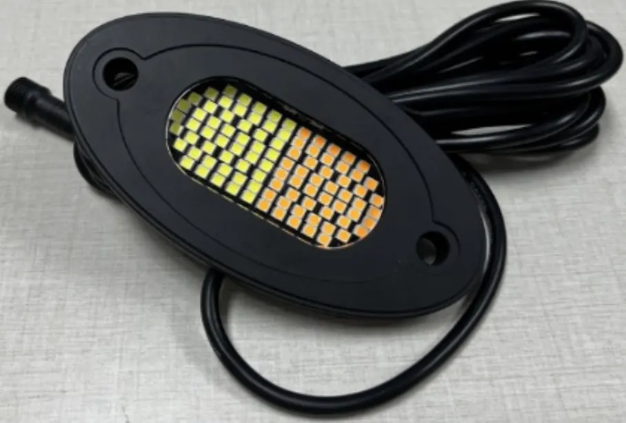

Plug And Play
112-Chip Switchback Rock Light Kit
White and amber chips in one sealed light. Pick solid white, solid amber, wigwag or strobe from the Bluetooth app or the remote, and set the speed and brightness.
$200 to $700 4 to 20 lights